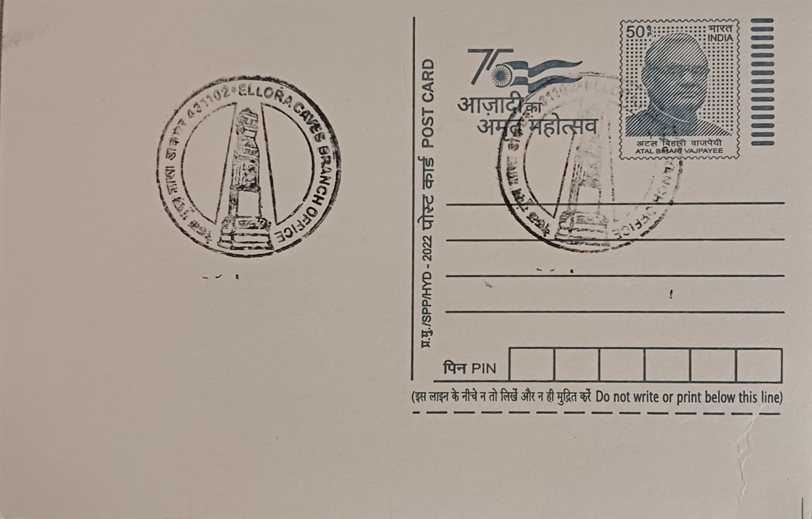

Deep Stambh
दीप स्तंभ


The term deep stambh derives from Sanskrit, combining "deepa" (lamp) and "stambha" (pillar), and denotes a category of freestanding stone columns erected in Hindu temple courtyards across the Deccan, with closely related forms known as deepmala or dhwajastambha found throughout Maharashtra and Goa. Rather than commemorating a single founding legend, the deep stambh at Ellora belongs to a broader architectural convention in which such pillars were raised beside the sanctum or the Nandi shrine as a standing offering of light, their construction or dedication traditionally regarded as an act of religious merit undertaken by temple patrons, guilds, or ruling dynasties rather than a single named founder.
Within the Kailasa Temple complex at Ellora, the lamp pillars form part of a monumental Shaiva shrine carved as a single excavation into the basalt hillside, ranked among the most ambitious rock-cut structures in the world. The temple is traditionally attributed to the Rashtrakuta king Krishna I, who reigned in the latter half of the 8th century CE, with work continuing into the 9th century under his successors. As freestanding pillars rather than carved reliefs, the deep stambhas required their rock to be isolated and sculpted independently of the surrounding courtyard, a technical feat that distinguishes them from the attached pillars of the temple's mandapas and underscores the scale of the labour involved in excavating the entire monument downward from a single rock face.
Flanking the Nandi mandapa in front of the main shrine stand two such freestanding pillars, each roughly 51 feet in height, positioned symmetrically on either side of the shrine housing Shiva's bull mount. These are sometimes additionally termed kirti-stambhas, or pillars of victory, reflecting their dual function as both ceremonial lamp-towers and markers of royal or sacred triumph. Elsewhere in Maharashtra, comparable deepstambhas typically rise to about ten feet and are built with tiers of projecting niches or sockets designed to hold rows of oil lamps, climbed by temple attendants on festival nights so that the entire column could be lit from base to summit, a practice recorded at temple sites such as Walkeshwar in Mumbai during Diwali, Dussehra, and Shivratri.
A distinguishing feature of the Kailasa Temple's pillars is their integration into a courtyard whose scale dwarfs most other Deccan temple sites: the excavated courtyard's rear wall rises roughly 84 metres high and 47 metres wide, while the temple proper measures about 50 metres deep, 33 metres wide, and 30 metres high, all carved from a single mass of rock over roughly a century of continuous excavation. The deep stambhas, together with carved elephants, lion friezes, and the Nandi shrine, were positioned to be seen in procession as visitors approached the sanctuary, so that the lighting of lamps along the pillars during festivals would have formed part of a larger choreographed experience of approach, darkness, and illumination within the temple's deliberately dramatic spatial design.
Ellora Caves, comprising 34 Buddhist, Hindu, and Jain excavations including the Kailasa Temple, were inscribed as a UNESCO World Heritage Site in 1983 and today fall under the protection and conservation mandate of the Archaeological Survey of India, which manages visitor access and ongoing preservation work at the site. The deep stambhas, having survived more than twelve centuries of weathering largely intact, are no longer lit with oil lamps on a regular ceremonial basis but remain standing within the conserved courtyard as fixed points of reference for the thousands of visitors and researchers who pass through the Kailasa Temple complex each year to study its rock-cut architecture.
| Date of Introduction | November 26, 1991 |
|---|---|
| Address | Branch Postmaster, |
| Ellora Caves BO, | |
| Chhatrapati Sambhajinagar (dt.), Maharashtra - 431102. |